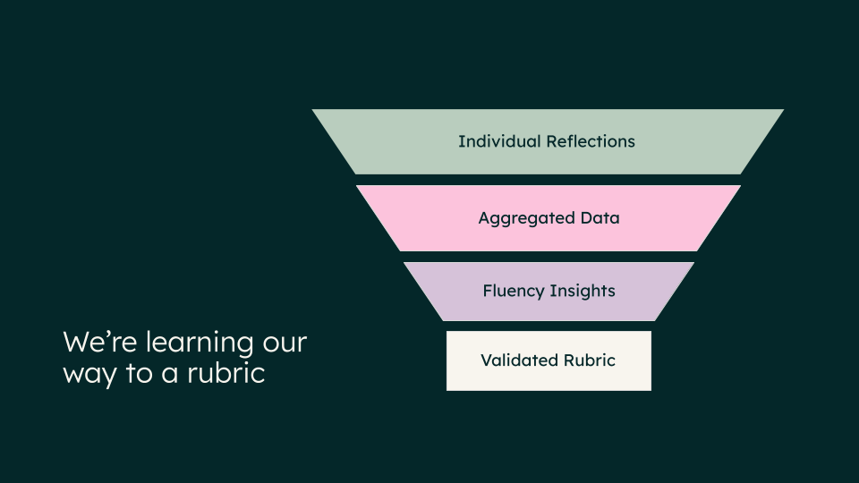
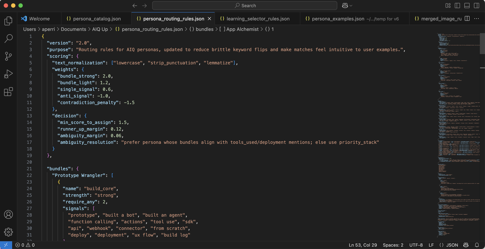

Turning a leadership question into a sensing system for learning in the age of AI.
Behind the Build
The L&D community is buzzing with conversations about how AI is changing our work. But so much of that conversation is high-level "what if." What I've been craving (and what I'm seeing others ask for) are the practical, "behind the build" stories of how we're moving from theory to practice.
This is my story of building one such tool: AIQ Up, a "personality quiz" that's really a strategic sensing engine in disguise.
It's a story about pivoting from a traditional L&D curriculum model to a "bottom-up, discovery model". Here's a look at how it was designed, prototyped, and launched.
Part 1: The Rubric Problem
The project didn't start with a clear solution. It started with a complex (and critical) strategic question from leadership: "What is our AI Fluency 2.0 and 3.0?".
My first step was to explore traditional L&D paths to answer this. My manager Corey had suggested the concept of a 'personal AI coach' (an idea that really resonated). I also explored what it would take to build a formal "AI fluency assessment".
I prototyped these concepts and quickly hit a fundamental, strategic wall with all of them: How can you coach or assess a skill you can't define?
In a space this new, any "rubric" we created would be a top-down, theoretical guess. A coach or assessment built on that guess would be flawed from the start. This is why the traditional, one-size-fits-all curriculum approach needed to evolve. We couldn't "push" a generic "201" course when our people were already in wildly different places.
The Strategic Pivot
That realization was the critical turning point. It flipped the entire problem. We had to shift from pushing content to pulling insights. Instead of guessing what "good" looked like, we needed to build a "sensing engine" to see what people were actually doing. We had to learn our way to a rubric.

Our new philosophy was to map the "diversity of strengths" in our AI ecosystem. An AI-native company doesn't just need prompt engineers; it critically needs Knowledge Tuners (who curate knowledge bases), Guardrail Guardians (who manage risk), and Workflow Weavers (who automate processes). At the same time, it also needs to identify new innovators emerging from unexpected places.
This "diversity of strengths" philosophy is not just a framework; it's a more inclusive and strategic approach to building AI fluency. It intentionally counters the common, high-pressure narrative that "everyone must be a bot-builder or prompt engineer". That narrative can be alienating. This model, by contrast, validates the critical, high-value AI contributions from everyone—the curators, the testers, the process-improvers—and gives us a way to see and scale all of that goodness.
Designing for Product Delight
For this to work, it couldn't feel like a test. I designed it around what Nesrine Changuel calls "Product Delight" principles—"The delight is actually this ability to create products that serve for both emotional need and functional need." Her insights from Lenny's Podcast heavily influenced my approach as I was crafting AIQ Up, leading to a framework that balances two key drivers:
- Functional Motivators (The "Useful"): The experience had to provide immediate, personal value. The user reflects on one real AI use case and, in return, gets personalized coaching and tangible next steps.
- Emotional Motivators (The "Joyful"): The experience had to be engaging. This is where the "personality" part comes in. It had to be playful like a personality quiz (think Hogwarts Houses or Buzzfeed results). This lowers the stakes and makes people want to participate.
This "useful and joyful" design led directly to the core concept: a bot that sorts you into one of 11 AI Personas. These aren't just fun names; they are behavioral archetypes. For example:
- ✍️ Draft Whisperer — The Wordsmith: You use AI to shape messy ideas into crisp words, focusing on speed and clarity.
- 🧪 Prototype Wrangler — The Maker: You learn by building, testing, and iterating. You're the one wrangling messy prompts until you have something people can use.
- 🔍 Data Sleuth — The Investigator: You use AI as a partner in analysis, finding the signal in the noise.
Part 2: The Rigorous Build & Iteration Loop
I didn't have a dedicated dev team, so I used ChatGPT as my rapid prototyping environment to architect and test the entire system myself. This was not a quick process; it was a relentless loop of building, testing, and iterating to ensure the logic was sound.
1. Architecting the Brain
The build involved three complex layers:
- The Conversational Flow: Designing the 8-question sequence that guides the user through their story (Role > Tools > Goal > Approach > Outcome, etc.).
- The Persona Matching Logic: This was the core technical design. I built a system of "signals," "bundles," and "anti-signals" so the bot could analyze the behavior in a user's story, not just hunt for keywords.
- The Coaching Framework: Designing the 3-part coaching output ("Doing well," "Push further," "Next step" + a 7-day micro-challenge).

2. A Relentless Testing Cycle (Pre-Launch)
The rigor was in the testing. We couldn't launch this until it was proven to be robust, accurate, and resonant.
- Step 1: Personal Prototyping: I personally built 8 major prototypes and tested the bot hundreds of times with different examples to refine the matching logic and coaching quality.
- Step 2: Core Team Testing: I opened it up to my immediate L&D team for initial feedback.
- Step 3: Broader User Testing: I then ran a formal testing phase with a diverse set of 30+ HubSpotters from different orgs and roles (e.g., Marketing, CS, UX). This wasn't just a bug hunt; I was testing resonance.
This pre-launch testing was crucial. We learned, for example, that the "Levels" (Starter, Explorer, Builder) were confusing and needed better explanation. We also heard that some of the "micro-challenges" felt too heavy, so I iterated on the prompt logic to make them more "micro". But just as importantly, the testing overwhelmingly validated our Product Delight hypothesis. We received broad positive feedback that the experience was 'fun' and 'engaging,' but also 'useful' and 'worth sharing'. This rigorous, multi-stage process was vital to building trust in the tool before it ever went live.
Part 3: From Prototype to Platform (The Launch)
From Prototype to Strategic Partnership
A prototype in ChatGPT is a powerful demo, but it's a closed loop. The real strategic win came from deploying it, which required a deep partnership with our People Analytics team.
We launched AIQ Up in GrowGetterAI, their internal AI platform. This move was critical for two reasons:
- Trust & Privacy: It ensured all interactions are confidential and data is anonymized by default, which was non-negotiable.
- The Insight Engine: This is the key. This partnership is what transforms AIQ Up from a simple tool into a sensing system. By living on their platform, we now have the ability to aggregate all the anonymized data, learn from the patterns, and build the behavioral maps that were the goal from day one. This would be impossible in a public tool.
Partnering for the Pull
A good product can still fail with a bad launch. We needed to continue the "pull" philosophy. I collaborated closely with our Internal Comms team on a launch strategy that was about "momentum, not mandates".
We framed the launch as the first part of "Promptember," a fun, 2-week AI challenge. The comms plan was designed to spark curiosity and organic participation, not feel like another top-down requirement.
Early Signals
The early signals from our soft launch have been incredibly strong. In the first week alone:
- We had 384 unique users try the bot during one of the busiest times of year for the company.
- We saw an 86% completion rate. This is a powerful metric. It told us that even though some users found the reflection questions a 'heavy lift', the experience was valuable enough for them to finish. The "pull" model was working.
- 64 users used the bot more than once, showing they were curious to reflect on different projects and see if their persona would change.
The Work That Matters (And a Final Reflection)
This was never just about building a fun quiz. It was about creating an organizational "sensing system".
We're now sitting on HubSpot's first-ever behavioral map of AI adoption. We can start to see how our orgs are using AI, not just if. This "bottom-up intelligence" is what will power smarter, targeted enablement—moving us beyond generic "AI 101" to interventions that truly accelerate our fluency.
I'm incredibly fortunate to work for a company that encourages this kind of innovation and provides the psychological safety to build new systems responsibly. I know not every L&D or People team has this same environment or access to a dedicated People Analytics partner.
But I hope this "behind the build" story helps open minds to what's possible when L&D shifts its perspective—from being a provider of curriculum to being an architect of the systems that generate real, organizational intelligence.